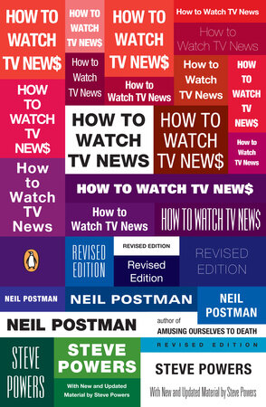
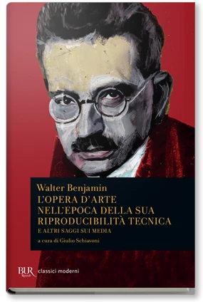
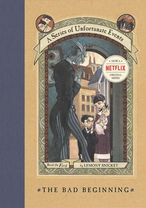
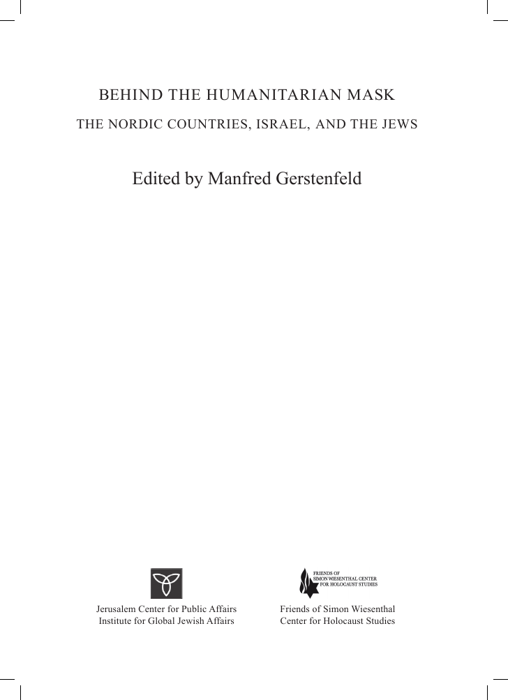

56:14 · 8 OPERE
Neil Postman: Come guardare le notizie in TV.
Il filo del discorso
Come distinguere un evento dalla sua costruzione televisiva? Dr Divago affronta la domanda attraverso How to Watch TV News di Neil Postman e Steve Powers, presentato come un manuale di educazione dello spettatore. La televisione seleziona, ordina e impagina una piccola parte di ciò che accade: riconoscere questa mediazione è il punto di partenza del contributo.
Leggi la sintesi completaRiduci la sintesi
Il racconto di Lincoln Steffens sulla ondata di criminalità creata dalla enfasi dei giornali e il richiamo agli studi sulla percezione del pericolo servono a interrogare il rapporto fra frequenza della esposizione e immagine del mondo. Il percorso segue gli otto suggerimenti finali del libro, alternandoli a osservazioni del relatore. Dalla selezione delle notizie passa alla forma spettacolare del telegiornale, alla pubblicità e agli interessi dei proprietari dei mezzi di comunicazione. Conoscere il contesto economico di una fonte può aiutare a valutarla, ma non prova automaticamente la falsità di ogni suo contenuto. Benjamin introduce il problema della riproduzione delle immagini; il conte Olaf di Una serie di sfortunati eventi offre invece una analogia narrativa sul riconoscere un movente dietro un travestimento. La attenzione si sposta poi sul linguaggio e sul tempo necessario a spiegare. Dr Divago critica formule, etichette e presentazioni troppo brevi dei risultati scientifici. Il bosone di Higgs diventa un esempio della distanza fra una scoperta e lo slogan che la accompagna. La discussione chiede anche di accettare un limite: non possedere una opinione su tutto e poter dire di non sapere. Le percentuali con cui il libro suggerisce di ridurre notizie e opinioni sono un invito polemico alla scelta del proprio tempo, non una misura clinica o una legge della conoscenza. La conclusione collega educazione ai media e formazione dei giovani. Da Giustizia, non vendetta di Simon Wiesenthal viene richiamato un passaggio sul rischio di una vita priva di direzione e limitata al consumo; la dedica della raccolta curata da Manfred Gerstenfeld rende omaggio alla sua testimonianza. Frankl entra come esempio della ricerca di significato nella esperienza della persecuzione. Il valore attribuito alla lettura è quello di costruire strumenti per discutere ciò che si vede e si ascolta. I paralleli di Dr Divago con la pandemia, le sue accuse alle oligarchie e i suoi giudizi sui rischi sanitari restano sue tesi: non sono conclusioni documentate dal libro del 1992 né dalla testimonianza di Wiesenthal.
I libri nel discorso

How to Watch TV News (Come guardare le notizie in TV)
Note sul riferimento
Copertina: Copertina ufficiale Penguin Books, revised edition, 24 giugno 2008, ISBN 9780143113775. Prima pubblicazione 1992 e revisione 2008 sono distinte. La composizione tipografica multicolore ripete titolo e nomi; non è un collage generato dal progetto.
Immagine autentica dell’opera, controllata visivamente; l’edizione di riferimento non è attribuita al filmato.
Neil Postman, Steve Powers e il titolo Come guardare le notizie in TV sono espliciti; la fonte discute How to Watch TV News.

Divertirsi da morire. Il discorso pubblico nell’era dello spettacolo
Note sul riferimento
Copertina: Luiss University Press · 2021 · prefazione di Matteo Bittanti
Immagine autentica dell’opera, controllata visivamente; non identifica l’edizione usata nel video.
Amusing Ourselves to Death è esplicito con una traduzione orale del titolo.

L’opera d’arte nell’epoca della sua riproducibilità tecnica
Note sul riferimento
Raccolta BUR · contiene il saggio di Benjamin: Copertina BUR classici moderni, 28 agosto 2013, ISBN 9788817063296: L’opera d’arte nell’epoca della sua riproducibilità tecnica e altri saggi sui media, a cura di Giulio Schiavoni, 256 pagine. È una raccolta che contiene il saggio nominato, non una sua prima edizione autonoma.
Immagine autentica dell’opera, controllata visivamente; l’edizione di riferimento non è attribuita al filmato.
Walter Benjamin e L’opera d’arte nell’epoca della sua riproducibilità tecnica sono nominati.

A Series of Unfortunate Events (Una serie di sfortunati eventi)
Note sul riferimento
The Bad Beginning · primo volume del ciclo: Il ciclo è illustrato dalla copertina del primo volume The Bad Beginning, HarperCollins, ISBN 9780064407663, 176 pagine; il catalogo indica la pubblicazione il 25 agosto 1999. L’immagine corrente reca un richiamo alla serie Netflix e rappresenta quindi una ristampa, non un oggetto materiale sicuramente del 1999. La sua selezione illustra la serie e non aggiunge una citazione esplicita del titolo del primo volume nel filmato.
Copertina autentica ufficiale vista interamente. Il bollo Netflix è dichiarato; la data del catalogo è quella dell’opera, non prova la data della ristampa fotografata.
A Series of Unfortunate Events e il film con Jim Carrey sono espliciti. La voce esistente rappresenta la serie libraria, non la locandina del film.
Giustizia, non vendetta
Note sul riferimento
Fotografia dell’esemplare · Mondadori 1989: Fotografia della sovraccoperta Mondadori, Le scie, 1989: ritratto di Wiesenthal e titolo in giallo e bianco. ISBN 8804324309, traduzione di Carlo Mainoldi. La fotografia è una copia di riferimento, non una identificazione visiva del volume mostrato nel video.
Immagine autentica dell’opera, controllata visivamente; l’edizione di riferimento non è attribuita al filmato.
Simon Wiesenthal e Giustizia non vendetta sono nominati; la lettura conclusiva ritorna a3067.

Behind the Humanitarian Mask: The Nordic Countries, Israel, and the Jews
Note sul riferimento
Frontespizio · edizione inglese 2008: Frontespizio autentico della edizione inglese 2008, Jerusalem Center for Public Affairs / Friends of Simon Wiesenthal Center for Holocaust Studies, ISBN 9789652180667. Riproduzione della pagina 3 del documento. L’immagine non raffigura la copertina esterna.
Frontespizio originale con titolo, curatore e due istituzioni editrici, dichiarato senza confonderlo con la copertina. Il PDF integrale resta escluso dalle esportazioni; è pubblicata soltanto questa immagine bibliografica.
Titolo tradotto oralmente Dietro la maschera umanitaria e dedica a Simon Wiesenthal: corrispondono al volume inglese curato da Gerstenfeld.
Giustizia, non vendetta
Note sul riferimento
Fotografia dell’esemplare · Mondadori 1989: Fotografia della sovraccoperta Mondadori, Le scie, 1989: ritratto di Wiesenthal e titolo in giallo e bianco. ISBN 8804324309, traduzione di Carlo Mainoldi. La fotografia è una copia di riferimento, non una identificazione visiva del volume mostrato nel video.
Immagine autentica dell’opera, controllata visivamente; l’edizione di riferimento non è attribuita al filmato.
Il libro ritorna con un passaggio finale sui giovani, il consumo e i programmi delle dittature.

Man’s Search for Meaning (Uno psicologo nei lager)
Identificazione probabile
Note sul riferimento
Copertina: Copertina Beacon Press, 1 giugno 2006, ISBN 9780807014295, prefazione di Harold S. Kushner e postfazione di William J. Winslade. Edizione inglese di riferimento, non la copia o la traduzione ricordata dal relatore; il collegamento al titolo resta probabile.
Immagine autentica dell’opera, controllata visivamente; l’edizione di riferimento non è attribuita al filmato.
Frankl e un libro sul significato della vita come storia di un sopravvissuto: collegamento probabile a Man’s Search for Meaning, titolo preciso e traduzione non identificati.